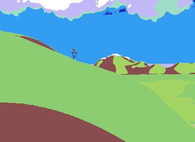

Game Dev
Ferra

Frenetic Bullet-Hell Boss Rush, created with Toffee using the Monogame framework for Boss Rush Jam 2023
Knight's Tail: Tactics

Procedurally generated Tactical RPG, created in Unity. Fight monsters and navigate from one end of the world map to the other in a series of tactical battles.
Playable build available upon request.
Gloam

Spooky-cute procedural city generator, developed in Unity. Climb buildings. Glide around. Enjoy the ambience as the spirits of Gloam go about their day.


Catastrophe Clingers

2020 entry for Global Game Jam: A sandbox game about holding your crumbling world together with cats. Developed with Andrew Wang
Marshmallow Exodus

Lead your Marshmallow flock to safety, but watch out for hungry gummybears! Developed with a small team for Global Game Jam 2019.
Arc
A procedurally endless walking simulator, developed as a case study in aesthetic applications of procedurally generated terrain in Unity
Where We Are
A VR Audio Installation Piece. Created as a Masters Thesis Project at Berklee College of Music and displayed at the Museum of Science at the City of Arts and Sciences in Valencia, Spain.
We Must Play The Fox

Collect eggs, avoid Chickens! an 8 bit procedural egg hunting game developed in a week with a small team for Lowrez Jam